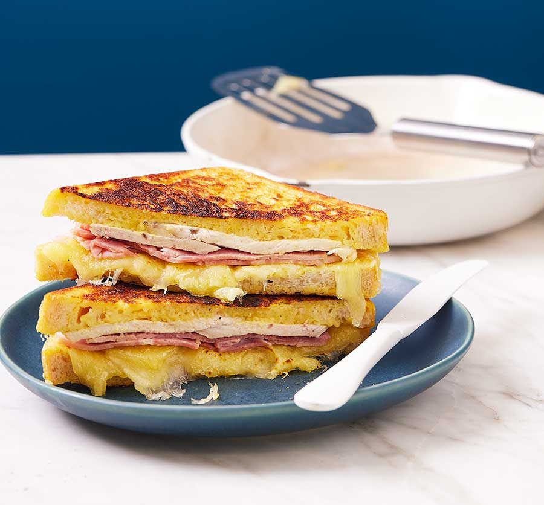

Back to Homepage
Monte Cristo sandwich

Description
Look forward to lunch with this sandwich inspired by the croque monsieur. Turkey, ham and Emmental are generously layered between slices of eggy bread
Ingredients
- 2 tsp Dijon mustard
- 2 tsp mayonnaise
- 2 slices white bread
- 2 slices ham, sliced
- 2 slices turkey, sliced
- 50g Emmental cheese, grated
- 1 egg
- 2 tbsp milk
- knob of butter, for frying
Method
- Mix the mustard and mayo in a small bowl, then spread over each slice of bread. Top one slice with the ham, turkey and cheese, then sandwich with the remaining slice of bread.
- Whisk the egg and milk in a wide, shallow bowl or dish. Soak the sandwich in the egg mixture, leaving for a few minutes on each side until all the egg has been absorbed by the bread.
- Melt the butter in a frying pan. When it's sizzling, add the sandwich and cook for 4-5 mins on each side until golden brown. If you have a sandwich or burger press, use this to weigh the sandwich down. If not, place a heavy lid on top to compress the sandwich and help melt the cheese. Cut in half to serve.